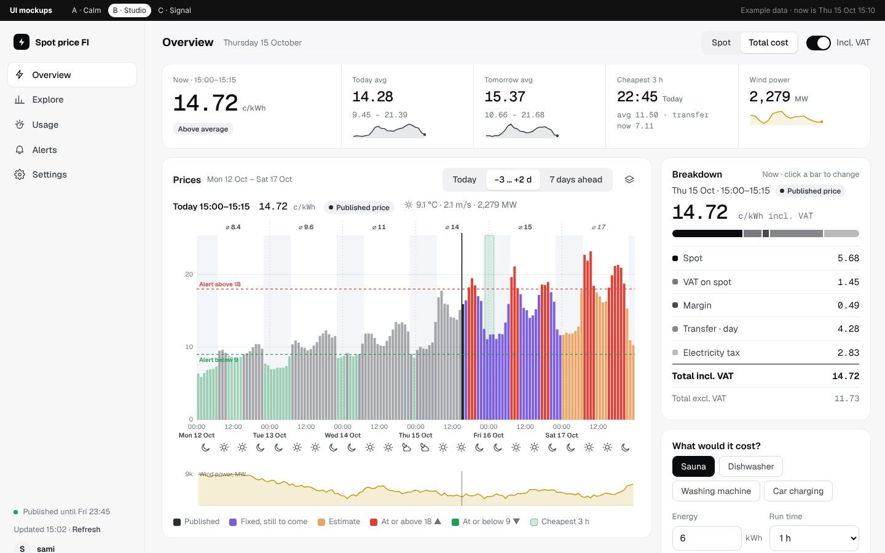
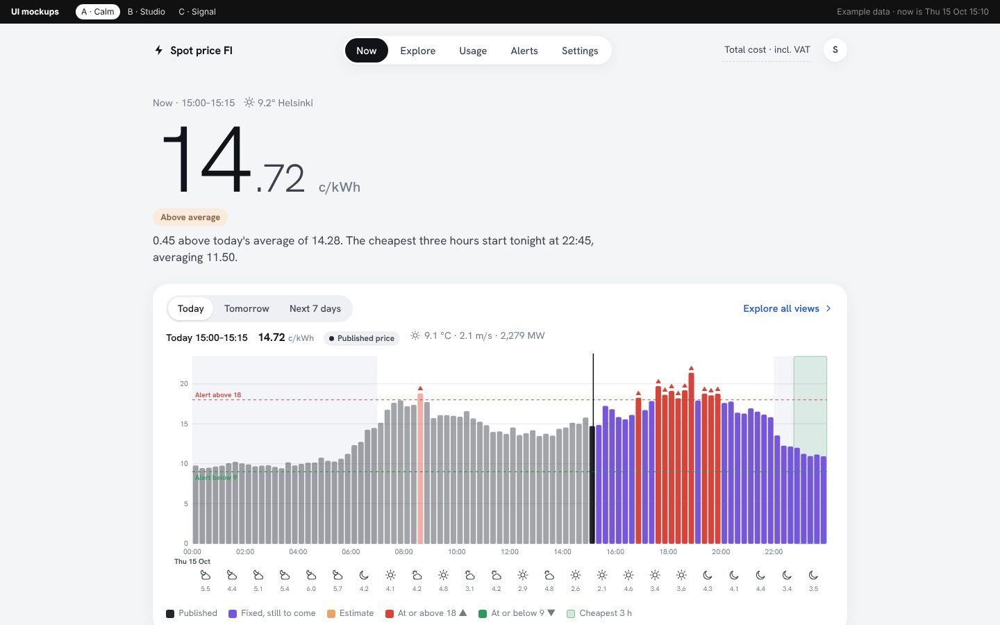
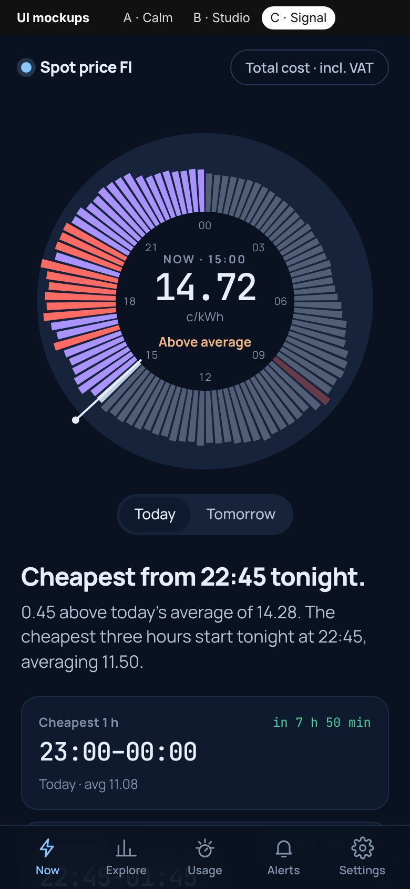

What it does
15-minute spot prices
Published Nord Pool prices for today and tomorrow, with spot or total cost (margin, transfer, tax, VAT, monthly fees).
Week-ahead estimate
A machine-learning estimate for the days not yet published, compared afterwards with the real price.
Wind and weather
Wind power forecast and production (Fingrid Open Data) and Open-Meteo weather for your place, next to the prices.
Alarms
High and low price limits, WhatsApp (CallMeBot) and email, with a schedule and recipients per user.
Cheapest hours
Cheapest 1, 3 and 6 hour windows, plus “What would it cost?” for sauna, dishwasher or car charging.
Your own consumption
Import Oomi or Fingrid Datahub files and see what you paid against the plain average price.
Three layouts



Run it your way
| Docker (NAS) | Local server | Standalone | |
|---|---|---|---|
| Start | docker compose up -d | ./run.sh / run.bat | open ElectricityFinland.html |
| Needs | Docker | Python 3.10+ | a browser |
| Alarms | 24/7 | while running | while the page is open |
git clone https://github.com/sbarrak/electricityfinland.git && cd electricityfinland
cp .env.example stack.env # optional: FINGRID_API_KEY
docker compose up -d --build
# open http://<nas-ip>:8088 (first login: admin / admin, then choose your own)Ready-made images for Portainer are published to GitHub Container Registry: ghcr.io/sbarrak/electricityfinland-app and ghcr.io/sbarrak/electricityfinland-setup.
Data sources (all free)
Nord Pool day-ahead prices, Open-Meteo weather, and optionally Fingrid Open Data for the official wind forecast. No account with this project is needed; your settings and consumption stay on your own server.